영국은 지금 브렉시트로 난리네요 -_-;;
주변 지인들도 전부 패닉입니다;;
파운드 내려가는걸 보니 좀 늦게올걸... 이라는 생각이랑 프리랜싱할때 USD로 받은거 파운드로 바꿔놓지 말걸...
이라는 생각이 들더군요;; 결론은 달러최고!! (응?)
그리고 저는 오자마자 여름세일기간에 맞춰 정신줄 놓고 질렀습니다;;;
스스로 생각해도 제정신이 아닌것처럼 물건을 사제꼈는데요 ㅡㅡ;;
오랜만에 고삐풀린 망아지처럼 쇼핑 씐나게 했습니다;;;
고백하자면 우선 신발을 네켤레 샀습니다............OTL
제가 주종목이 신발이 아닌데 말이죰;;; 사실 신발은 제 리스트에서 순위가 낮아요;;
근데 가방은 이미 사이즈별로 정말 맘에드는제품 한두개씩 다 갖고있고 옷은 지금 사놓은것도 안입고 하다보니 신발에 관심이 쏠렸나봅니다
20대초반에는 그냥 이것저것 많이사는게 좋았는데 떠돌이생활 한것도 있고 사놓고 모셔두기만 하면
은근 죄책감(?)에 시달려서 '1년동안 한번도 사용안하는건 아웃' 이라는 나름의 기준을 정해놓고 아이템별로
일정수 이상을 안 넘길려고 하는편인데, 그럼 뭐합니까 예쁘고 취향저격하는거 발견하면 정신줄을 놓는데 ㅋㅋㅋㅋㅋㅋㅋㅋ 닥터마틴이랑 빅토리아슈즈 단화 두개 가져와서 갑자기 4개가 훅 늘었어요 ^^;;;;;;
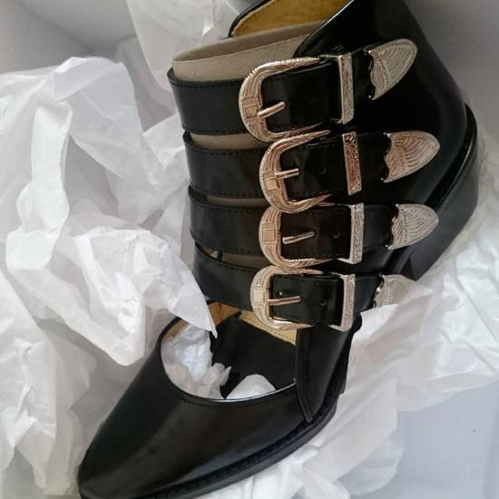
첫번째는 토가 버클 컷아웃 앵클부츠
파페치에서 마르셀 슈즈 주문하고 다시 들어갔다가 섬네일 보고 한눈에 반했습니다
처음본 브랜드인데 인터넷 찾아보니 일본브랜드에다 유럽에게 인기 많다고 하더라구용
제사이즈는 다 나가서 한치수 작은거 주문했는데 생각보다 널널해서 좀 의외였습니다. 구매후기를 보면 앞코가 좁아져서 한치수 큰거 사라는 사람도 있고 오히려 작은거 사라는 사람도 있었는데 나한테는 한치수 작은게 정답 ^^
슬리퍼나 샌들같이 양말신고 신을 일이 없는 신발은 UK4도 괜찮다는걸 이번에 깨달았습니당 :p
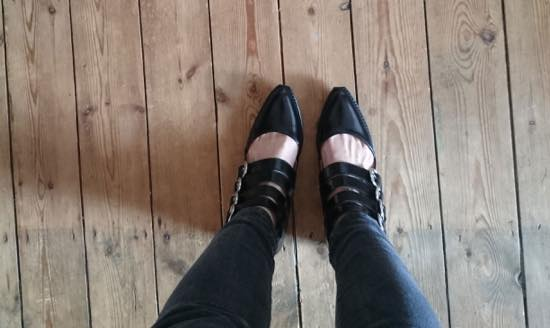
섬네일 사진을 본건 파페치 였지만 구매는 NET-A-PORTER 에서 했어요. 여기는 50% 세일중 희희희 300파운드 넘어가는 신발인데 이래저래 잘산것 같습니다 :D 박스열어보고 처음 든 생각은 '우와~흉악하게 생겼다!' 였구요 ㅋㅋㅋ
앞모습 보다는 측면에서 봤을때 늠 이쁩니당. (하지만 사진은 왜 앞에서 본것이냐 ㅋㅋㅋ)
걸을때 버클 절그럭 거리는소리 장난아니에요 ㅋㅋㅋㅋ
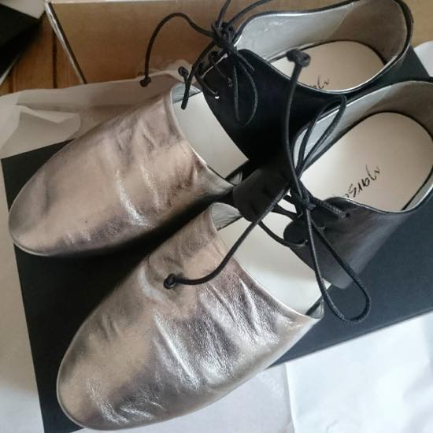
두번째는 마르셀
느므 애정하는 브랜드 입니다 ;ㅂ; 가죽 최고!! 착화감 예술!! ㅜㅜ
셀프리지에서 신어보고 한눈에 반했는데 망설이는 사이 제 사이즈 다 나가서
파페치서 반치수 작은 37.5 주문해 봤습니다. 덕분에 30% 할인된 가격에 겟 :3
이건 박스 열었을때 제일 처음 든 생각이 '우와~가격대비 가성비 정말 별로겠다' 싶었어요 ㅋㅋㅋ
이번에 구입한 신발중 제일 비싼데 활용도라던가 관리라던가 젤 까탈스러울거 같습니다 ㅡㅡ;;
주변 지인들로 부터는 괴랄하다 / 마법구두 등등의 소리를 들었구요 ㅋㅋㅋㅋ
사이즈는 맞았지만 이걸 자주 신을려나? 활용도는 정말 별로일거 같은데 ㅡㅡ;;; / 야 니가 언제 활용도 가성비 따지면서 물건 샀냐? 그냥 디자인 맘에들면 정신줄 놓으면서 뭐 이르케 자아분열해서 싸우다가 걍 킵하는걸로.....^^;;
요 모델은 검색하면 셀프리지 / 파페치 두군데 밖에 안나오는데 정말 빛의 속도로 품절되었어요;;
다들 빤딱이를 원하는건가;;;;
바닥이 늠 미끌거려서 이상태로는 걸을수가 없숴요... 동생이 비슷한 타입의 신발샀다가 진심 백번은 죽을뻔했다고 꼭 미끄럼방지 패드 사다 붙이라고 하더군요 ㅋㅋㅋㅋㅋㅋㅋㅋㅋ
발집어넣었을때 촉감이랑 가벼움은 정말 예술입니다 ㅜㅜ
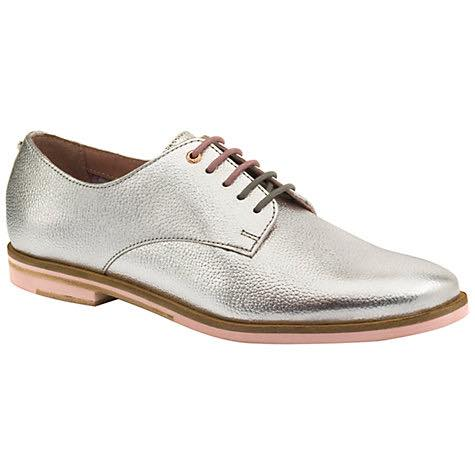
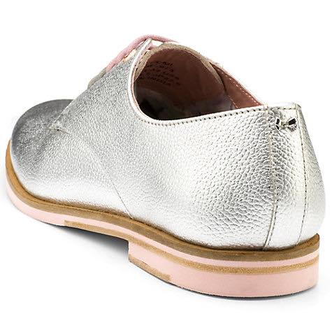
이게 위 마르셀 슈즈랑 비슷한 이유로 구매할려다 포기한 제품인데
테드베이커 레이스 업 브로그 입니다
은색 빤딱이 + 뒤에 리본 디테일이 느므 귀여워요 ㅋㅋ 근데 문제가 신었다 벗으면 주름자국이 넘 선명하게 남아서
한 5번 신으면 너덜너덜해 보이겠구나 싶더라구요;;;;
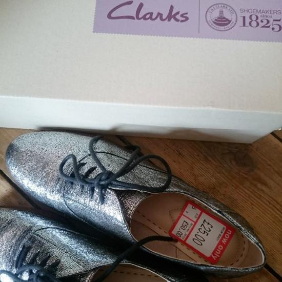
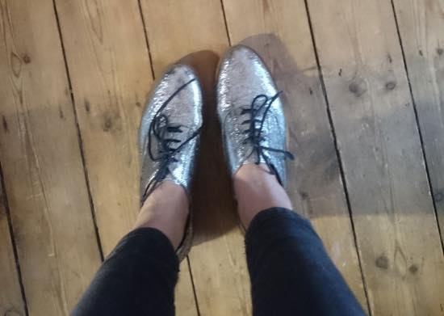
세번째는 계획에 없던건데 가격이 넘 싸서 ㅡㅡ;;;
클락스에서 지른 은색 빤딱이 신발 ^^ 야유회 돗자리로 만든것 같은 번쩍번쩍함
클락스답게 가볍고 편합니다 :)
이쯤되면 에이 모르겠다 갖고싶은거 사쟈 아항항항항~ 모드가 됩니다 ㅋㅋㅋ
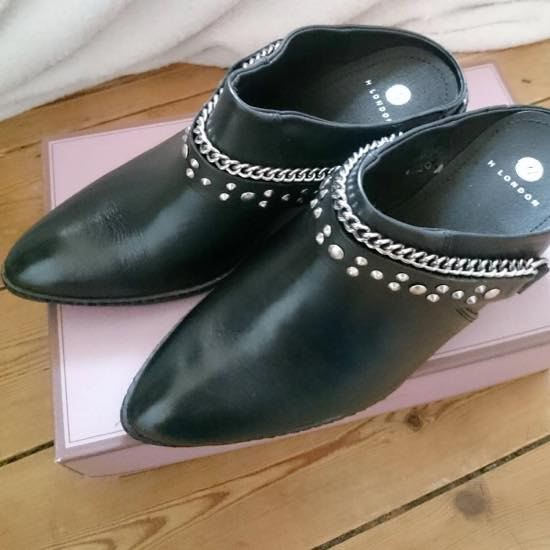
마지막으로 네번째는 전에 포스팅했던 ASOS에서 본 허드슨 런던 스터드 뮬 부츠
신발 앞코 뾰족한거 한번도 사본적 없는데 이번에 두켤레가 생겼네욤 :) 뮬타입도 처음
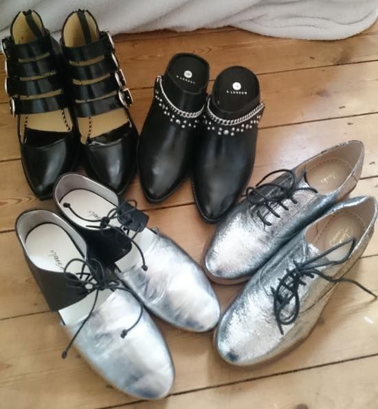
단체샷 :D
이런 미친짓(?) 오랜만이네요;; 오랜만에 왔더니 너무 씐났어;;;;;
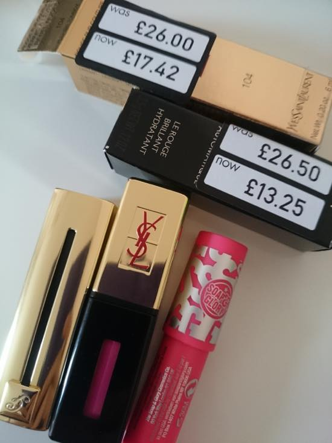
제 취미생활(?)은 세일기간에 30-50% 할인하는 색조제품 사는것입니다 ^^;;
겔랑 붉은색에 금색펄이 들어가있는 립스틱 / 입생 104번 하나씩
솝&앤 글로리는 매트타입으로 하나 더 집어왔습니다 :p
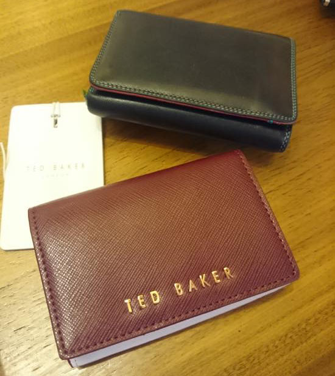
위에 My Walit 지갑은 2010년 - 2011년 정도에 구입했는데. 지금까지 이 지갑 섹션보다 맘에드는 구성을 찾지못해서 (똑같은제품 다시 사긴 어쩐지 싫고^^;;;) 계속 이것만 사용했는데 더이상 똑딱이가 제구실을 못해서 새로교체 했습니다. TED BAKER 반지갑 미니사이즈. 쪼매낳고 편해요 :) 현금보다는 카드사용자라 지갑은 작고 간단한걸 좋아합니다 ^^
이것말고도 위에서 가방은 사이즈별로 맘에드는거 다 있다고 한주제에 싸다고(....) 메신저백도 하나 사오고
미니 네일폴리쉬도 집어오고 씐나게 사제꼈네욤;;;;
하얗게불태웠어.........OTL
글엄 다시 힘내서 로동!!
쇼핑끗!!